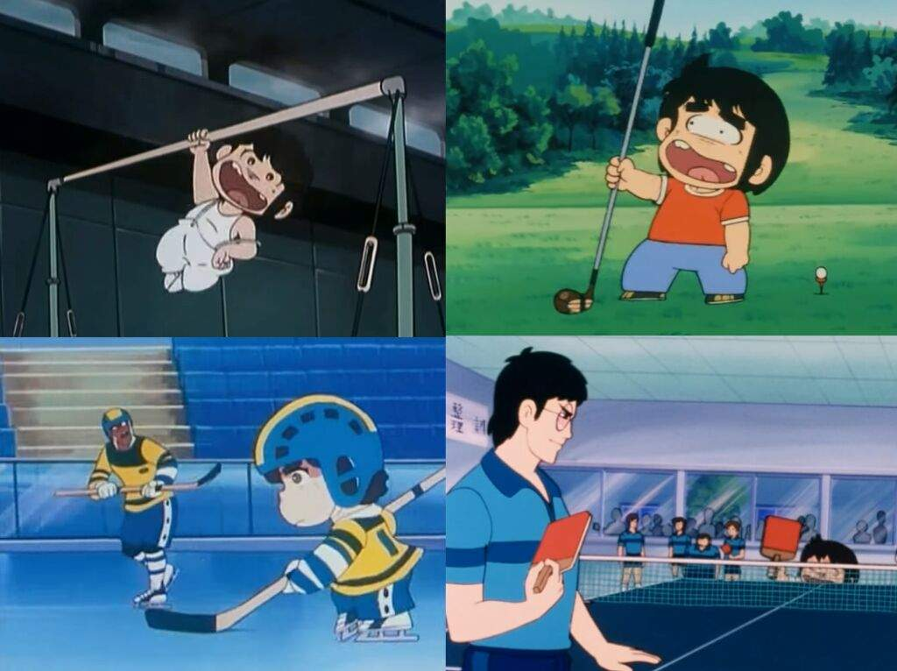
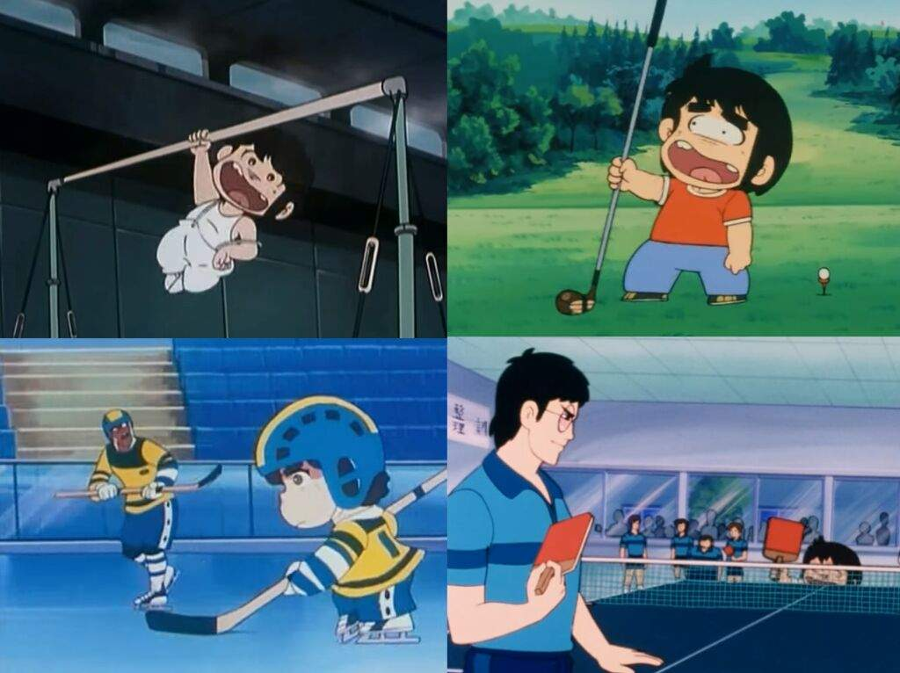

CHICHO TERREMOTO PRACTICANDO DEPORTES
ASIGNATURA: SOFTWARE LIBRE Y EDUCACION
CREADO POR JOSE LOPEZ BALDOVI
DIRIGIDO A 5º de Primaria

CHICHO TERREMOTO PRACTICANDO DEPORTES
ASIGNATURA: SOFTWARE LIBRE Y EDUCACION
CREADO POR JOSE LOPEZ BALDOVI
DIRIGIDO A 5º de Primaria
Obra publicada con Licencia Creative Commons Reconocimiento No comercial Compartir igual 4.0